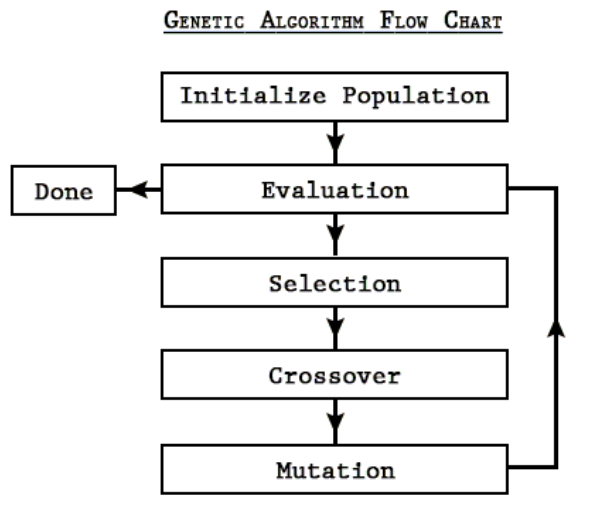

Aerodynamics and Controls
Airfoil Design
Github Repository
I programmed a genetic algorithm in Matlab to generate solutions to optimization or search problems by mimicking natural selection.
The user of the algorithm sets a population size, mutation rate, total number of generations, and selection criteria.
The algorithm runs for the specified number of generations
and ends up with novel results that are often of high quality. It can design a highly optimized solution
according to a given set of criteria.
This algorithm takes elements of natural selection and applies it in an optimization
problem. It uses three of the main principles from natural selection: variation, heredity, and differential
reproduction in the following steps.

1) Initialize: Create a random population of N elements; e.g. a random population of airfoils of varying
shapes.
2) Selection: evaluate the fitness of each element of the population and build a mating pool.
a) Calculate fitness for N elements (every member of the population). There needs to be some fitness function that looks at the individuals in the population and gives them a numerical score. For example, one airfoil might receive a fitness
score of 6, while another might receive a score of 15. The one with the higher score is considered
more fit. An example fitness function could be fitness = CL/CD. The higher the CL/CD the higher the fitness score.
b) Build a mating pool of elements that will have a chance to reproduce. One good way to do this
is to assign each element a probability of being selected for the mating pool based on its fitness.
Therefore, the most fit elements are more likely to be selected as parents, but we also do not leave
out less fit elements that add to the variation in the gene pool.
3) Reproduction: make a new element. Once the pairs of parents have been selected, create N child
elements by combining the genes of the parents.
a) Pick 2 parents (2 is arbitrary, could be changed as desired).
b) Crossover: take half of the genetic information from one parent and half from the other parent.
One option is to take the first half of the genes from
the first parent and the second half of the genes from the second parent. Another option is to
take a gene from parent 1 and then a gene from parent two in an alternating manner.
c) Mutation: before finishing the child element, randomly mutate some of its genes. A 5% mutation rate would imply that for each gene in the
child, there is a 5% chance that it randomly mutates into something else. For example, it might
randomly change values or increase or decrease in value by one. This mutation helps to maintain
variation in the population over time.
d) Add the new child to the new population
4) Replace the old population with the new population.
5) Repeat steps 2-4 for any number of generations.